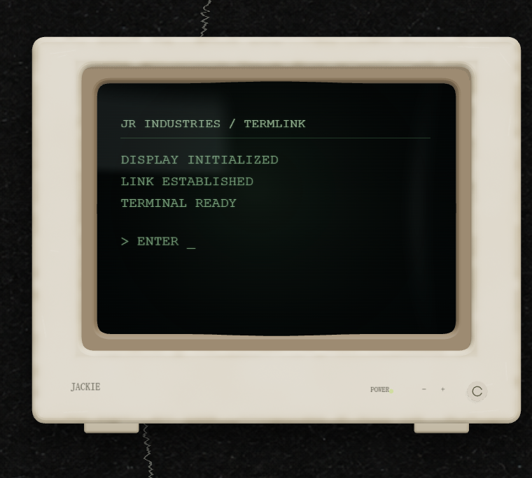
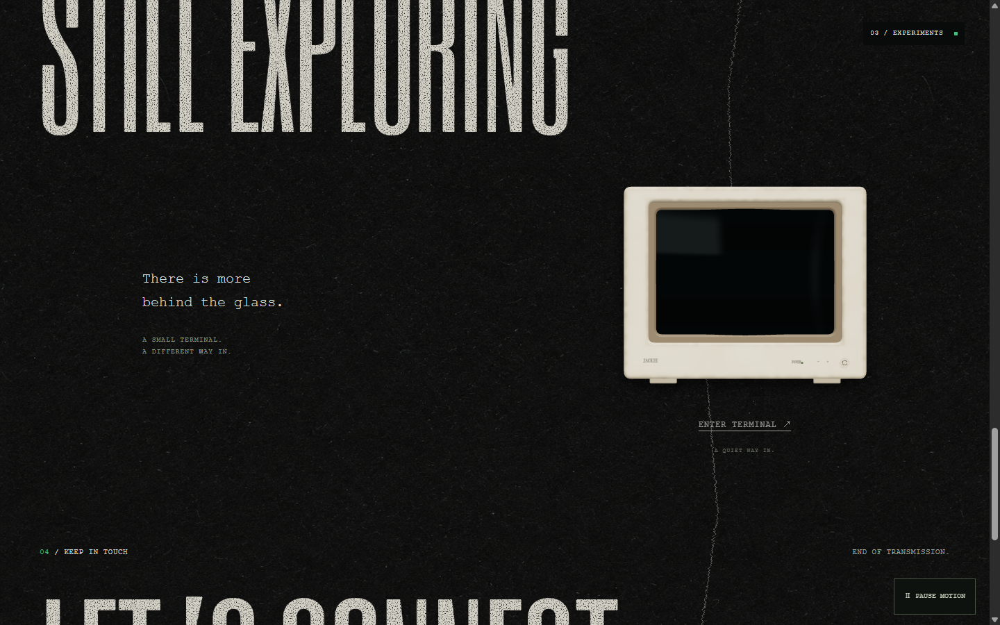
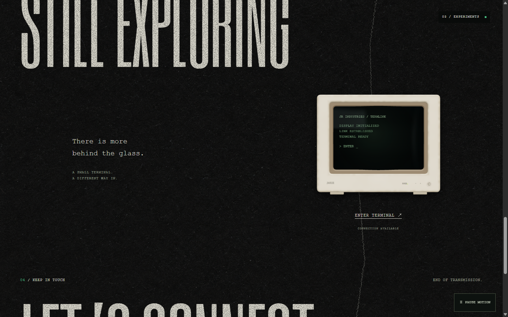

← 在首页体验MONITOR / 03 — 边缘旧痕与鼓面玻璃
保持正面视角与逐行唤醒。新增局部泛黄、缝隙积灰、角落细划痕，以及粗糙度和凹凸变化；玻璃中心前凸，边缘收进屏框。参考现有 Terminal 的暖主光、冷补光与深色内框。

实际浏览器近景 / DPR 2，不是生成效果图
实际浏览器帧录制，无声；靠近 → 逐行启动 → 离开熄屏。

01 / 待机
02 / 接通
手机视口 · 1920px 桌面 · 参考：实际 Terminal · 保留的上一版